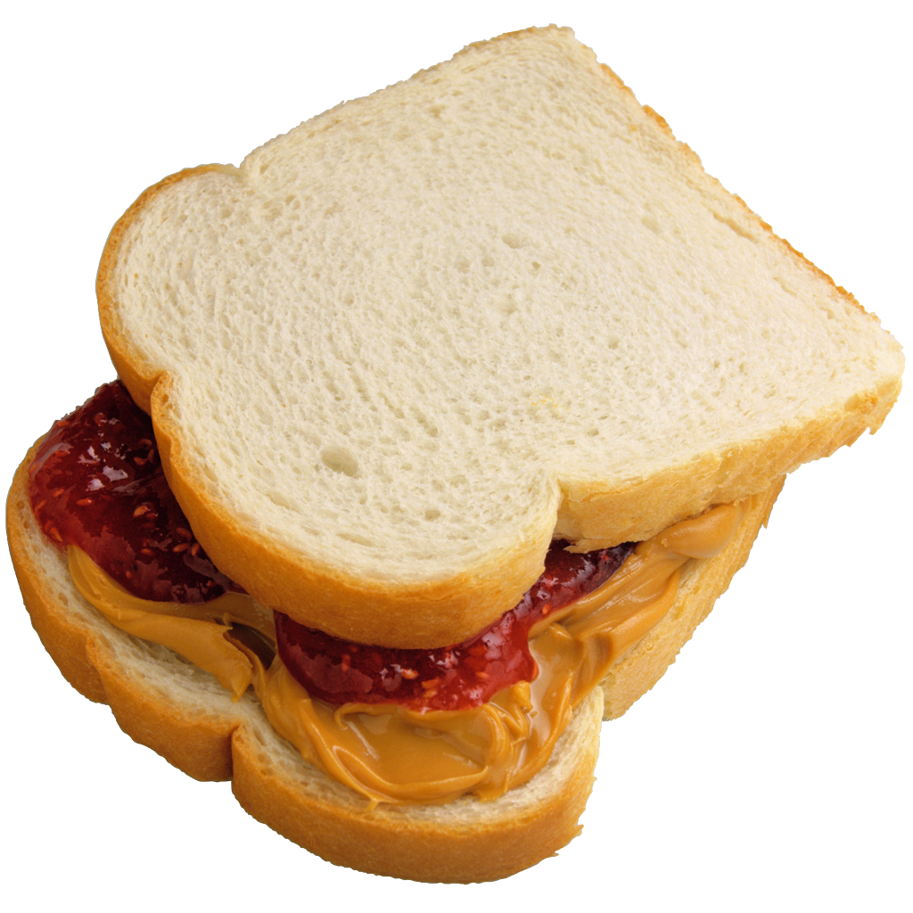

Peanut Butter & Jelly Sandwich

Folks, this is about as simple as you can get
Ingredients
- Peanut Butter (Crunchy or Creamy depending on your preference)
- Jelly (I prefer strawberry, but grape or any other is also acceptable)
- Two slices of your chosen bread
Directions
- Apply Peanut Butter to one side of one slice of bread, completely covering the face of the bread
- Apply Jelly to other slice of bread, in the same manner that you applied the peanut butter to the first slice
- This is very important and where novice sandwich makers typically make a grevious mistake. Apply peanut buttered side of the first slice, to the jellied side of the other slice, preferably so the rounded "heads" of both slices are touching
Pro-Tip
Crunchy PB is better. If you want to get real crazy then get one of those flavored peanut butters. I really enjoy the white chocolate flavor from Peanut Butter Co.
Return to homepage